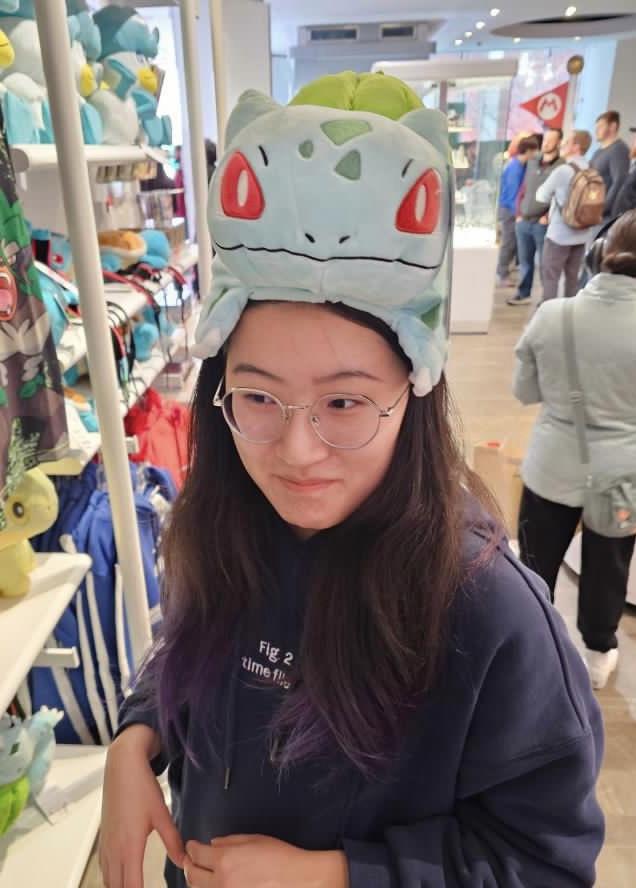

Ph.D. student, Data Science · New York University
New York, NY
machine learning
generative models
AI
neuroscience
Hi, I'm Shiyang, and I also go by Lilian. I build generative models that find the quiet,
low-dimensional structure underneath neural and behavioral recordings, and try to make that
structure something we can actually interpret.
I'm a Ph.D. student at NYU's Center for Data Science, advised by
John Pearson. I started my Ph.D. in Electrical and Computer
Engineering at Duke in 2024 and transferred to NYU with my advisor in 2026. Right now I'm studying how
mouse motor cortex controls reaching. Before that I worked on online models for streaming calcium
imaging and on flow-based models of latent dynamics.
Before all this, I studied mathematics at Xi'an Jiaotong-Liverpool University and the University of
Liverpool.
All of it applied to neural and behavioral time series

Research
A running record of what I'm working on with the Pearson Lab, and what came before.
Now
OngoingNov 2025 – nowNYU & Duke
Motor control in mouse reaching
Latent variable models of how mouse motor cortex controls reaching. I'm building a generative model
that explains trial-to-trial variability through latent control signals, pairing a GP-VAE over the
controls with flow matching to capture nonlinear, multimodal reach dynamics.
Earlier in the project, I used GLMs and Poisson linear dynamical systems to model how motor cortical
output integrates distorted proprioceptive feedback.
A state-space model, Glow-SPLAT, that finds low-dimensional population dynamics in streaming,
large-scale calcium imaging data. It's fitted with a particle-filter EM strategy and written in JAX,
and it keeps pace with thousands of neurons faster than the microscope records them.
A dual flow-matching model that learns identifiable, low-dimensional latent dynamics from neural and
behavioral data. One flow field models how the system evolves over time; the other maps the data into
a low-dimensional latent space and is trained to leave those dynamics undistorted, with a nested-dropout
constraint keeping the latent space small. The result is more interpretable dynamics and better
reconstructions than competing models, even on noisy datasets where conventional methods fail.
Published at ICML 2026.
Real-time analysis for live neuroscience experiments
A Python system that classifies neurons from streaming calcium imaging while an experiment is running,
with an interface for watching the results come in.